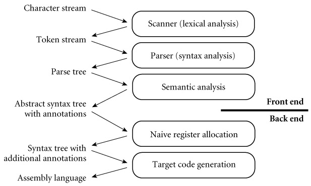

|
|
|
|
14.3 Code Generation
Example 14.5: Simpler
compiler structure
|
|
The back end of Figure 14.1 is too complex to present in any detail in a
single chapter. To limit the scope of our discussion, we will content ourselves
in this chapter with producing correct but naive code. This choice will allow
us to consider a significantly simpler back end. Starting with the structure of
Figure 14.1, we drop the machine-independent code improver
and then merge intermediate and target code generation into a single phase.
This merged phase generates pure, linear assembly language; because we are not
performing code improvements that alter the program's control flow, there is no
need to represent that flow explicitly in a control flow graph. We also adopt a
much simpler register allocation algorithm, which can operate directly on the
syntax tree prior to code generation, eliminating the need for virtual
registers and the subsequent mapping onto architectural registers. Finally, we
drop instruction scheduling. The resulting compiler structure appears in Figure
14.5. Its code generation phase closely resembles the intermediate code
generation of Figure 14.1.

Figure 14.5: A simpler,
nonoptimizing compiler structure, assumed in Section 14.3. The target code generation phase
closely resembles the intermediate code generation phase of Figure 14.1.
|
|
14.3.1 An Attribute Grammar Example
Like semantic analysis, intermediate code generation can be
formalized in terms of an attribute grammar, though it is most commonly
implemented via handwritten ad hoc traversal of a syntax tree. We present an
attribute grammar here for the sake of clarity.
Design & Implementation
Postscript
One of the most pervasive uses of stack-based languages
today occurs in document preparation. Many document compilers (TEX, troff, Microsoft Word, etc.) generate Postscript as their target
language (most employ some special-purpose intermediate language as well, and
have multiple back ends, so they can also generate other target languages).
Postscript is stack-based. It is portable, compact, and easy to generate. It is
also written in ASCII, so it can be read (albeit with some difficulty) by human
beings. Postscript interpreters are embedded in most professional-quality
printers. Issues of code improvement are relatively unimportant: most of the
time required for printing is consumed by network delays, mechanical paper
transport, and data manipulations embedded in (optimized) library routines;
interpretation time is seldom a bottleneck. Compactness on the other hand is
crucial, because it contributes to network delays. (See discussion concerning
this in Section 14.2 and its subsections.)
|
|
In Figure 1.6 (page 34) we presented naive x86 assembly
language for the GCD program. We will use our attribute grammar example to
generate a similar version here, but for a RISC-like machine, and in
pseudo-assembly notation. Because this notation is now meant to represent
target code, rather than medium- or low-level intermediate code, we will assume
a fixed, limited register set reminiscent of real machines (but larger than
provided by the 32-bit version of the x86). We will reserve several registers
(a1, a2, sp, rv) for special purposes; others (r1 . . rk) will be
available for temporary values and expression evaluation.
Example 14.6: An
attribute grammar for code generation
|
|
Figure
14.6 contains a fragment of our attribute grammar. To save space, we have
shown only those productions that actually appear in Figure 14.2. As in Chapter 4, notation like while : stmt on the
left-hand side of a production indicates that a while node in the syntax
tree is one of several kinds of stmt node; it may serve as the stmt
in the right-hand side of its parent production. In our attribute grammar
fragment, program, expr, and stmt all have a synthesized
attribute code that contains a sequence of instructions. Program has an
inherited attribute name of type string, obtained from the compiler command
line. Id has a synthesized attribute stp that points to the symbol table
entry for the identifier. Expr has a synthesized attribute reg that
indicates the register that will hold the value of the computed expression at
run time. Expr and stmt have an inherited attribute next_free_reg
that indicates the next register (in an ordered set of temporaries) that is
available for use (i.e., that will hold no useful value at run time)
immediately before evaluation of a given expression or statement.
|
|
reg_names : array [0..k-1] of register_name :=
["r1", "r2", … , "rk"]
-- ordered
set of temporaries
program → stmt
⊲
stmt.next_free_reg := 0
⊲
program.code := ["main:"] + stmt.code + ["goto exit"]
while : stmt1 → expr
stmt2 stmt3
⊲
expr.next_free_reg := stmt2.next_free_reg := stmt3.next_free_reg
:= stmt1.next_free_reg
⊲ L1
:= new_label(); L2 := new_label()
stmt1.code
:= ["goto" L1] + [L2 ":"] + stmt2.code + [L1
":"] + expr.code
+ ["if" expr.reg
"goto" L2] + stmt3.code
if : stmt1 → expr
stmt2 stmt3 stmt4
⊲
expr.next_free_reg := stmt2.next_free_reg := stmt3.next_free_reg
:= stmt4.next_free_reg :=
stmt1.next_free_reg
⊲ L1
:= new_label(); L2 := new_label()
stmt1.code := expr.code + ["if" expr.reg
"goto" L1] + stmt3.code + ["goto" L2]
+ [L1
":"] + stmt2.code + [L2 ":"] + stmt4.code
assign : stmt1 → id
expr stmt2
⊲
expr.next_free_reg := stmt2.next_free_reg := stmt1.next_free_reg
⊲
stmt1.code := expr.code + [id.stp→name ":=" expr.reg] + stmt2.code
read : stmt1 → id1
id2 stmt2
⊲
stmt1.code := ["a1 := &" id1.stp→name] -- file
+ ["call" if id2.stp→type = int then "readint"
else …]
+ [id2.stp→name ":= rv"] + stmt2.code
write : stmt1 → id
expr stmt2
⊲
expr.next_free_reg := stmt2.next_free_reg := stmt1.next_free_reg
⊲
stmt1.code := ["a1 := &" id.stp→name] -- file
+ ["a2 :=" expr.reg]
--
value
+ ["call" if id.stp→type = int then "writeint" else …] +
stmt2.code
writeln : stmt1 → id
stmt2
⊲
stmt1.code := ["a1 := &" id.stp→name]
+ ["call writeln"] + stmt2.code
null : stmt → ∊
⊲
stmt.code := null
'<>' : expr1 → expr2
expr3
⊲
handle_op(expr1, expr2, expr3, "≠")
' >' : expr1 → expr2
expr3
⊲
handle_op(expr1, expr2, expr3,
">")
'-' : expr1 → expr2
expr3
⊲
handle_op(expr1, expr2, expr3, "-")
id : expr → ∊
⊲ expr.reg
:= reg_names[expr.next_free_reg mod k]
⊲
expr.code := [expr.reg ":=" expr.stp→name]
macro handle_op(ref result, L_operand, R_operand, op :
syntax_tree_node)
result.reg
:= L_operand.reg
L_operand.next_free_reg := result.next_free_reg
R_operand.next_free_reg := result.next_free_reg + 1
if
R_operand.next_free_reg < k
spill_code := restore_code := null
else
spill_code := ["*sp :=" reg_name[R_operand.next_free_reg mod k]]
+ ["sp := sp - 4"]
restore_code := ["sp := sp + 4"]
+ [reg_names[R_operand.next_free_reg
mod k] ":= *sp"]
result.code := L_operand.code +
spill_code + R_operand.code
+ [result.reg ":=" L_operand.reg op R_operand.reg] +
restore_code
|
|
Figure 14.6: Attribute
grammar to generate code from a syntax tree. Square brackets delimit individual target instructions.
Juxtaposition indicates concatenation within instructions; the '+' operator
indicates concatenation of instruction lists. The handle_op macro is used in
three of the attribute rules.
|
|
Because we use a symbol table in our example, and because
symbol tables lie outside the formal attribute grammar framework, we must
augment our attribute grammar with some extra code for storage management. Specifically,
prior to evaluating the attribute rules of Figure
14.6, we must traverse the symbol table in order to
calculate stack-frame offsets for local variables and parameters (two of which―i and j―occur
in the GCD program) and in order to generate assembler directives to allocate
space for global variables (of which our program has none). Storage allocation
and other assembler directives will be discussed in more detail in Section
14.5.
Evaluation of the rules of the attribute grammar itself
consists of two main tasks. In each subtree we first determine the registers
that will be used to hold various quantities at run time; then we generate
code. Our naive register allocation strategy uses the next_free_reg inherited
attribute to manage registers r1 . . rk as an expression evaluation
stack. To calculate the value of (a + b) × (c - (d / e)), for example, we would
generate the following:
Example 14.7: Stack-based
register allocation
|
|
r1 := a
-- push a
r2 := b --
push b
r1 := r1 + r2 -- add
r2 := c
-- push c
r3 := d
-- push d
r4 := e
-- push e
r3 := r3 / r4 -- divide
r2 := r2 - r3 --
subtract
r1 := r1 × r2 -- multiply
Allocation of the next register on the "stack"
occurs in the production id :expr → ∊,
where we use expr.next_free_reg to index into reg_names, the array of temporary
register names, and in macro handle_op, where we increment next_free_reg to
make this register unavailable during evaluation of the right-hand operand.
There is no need to "pop" the "register stack" explicitly;
this happens automatically when the attribute evaluator returns to a parent
node and uses the parent's (unmodified) next_free_reg attribute. In our example
grammar, left-hand operands are the only constructs that tie up a register during
the evaluation of anything else. In a more complete grammar, other long-term
uses of registers would probably occur in constructs like for loops (for the step size, index, and bound).
In a particularly complicated fragment of code it is
possible to run out of architectural registers. In this case we must spill
one or more registers to memory. Our naive register allocator pushes a register
onto the program's subroutine call stack, reuses the register for another
purpose, and then pops the saved value back into the register before it is
needed again. In effect, architectural registers hold the top k elements
of an expression evaluation stack of effectively unlimited size.
|
|
It should be emphasized that our register allocation
algorithm, while correct, makes very poor use of machine resources. We have
made no attempt to reorganize expressions to minimize the number of registers
used, or to keep commonly used variables in registers over extended periods of
time (avoiding loads and stores). If we were generating medium-level intermediate
code, instead of target code, we would employ virtual registers, rather than
architectural ones, and would allocate a new one every time we needed it, never
reusing one to hold a different value. Mapping of virtual registers to
architectural registers would occur much later in the compilation process.
Example 14.8: GCD
program target code
|
|
Target code for the GCD program appears in Figure
14.7. The first few lines are generated during symbol table traversal,
prior to attribute evaluation. Attribute program.name might be passed to the
assembler, to tell it the name of the file into which to place the runnable
program. A production-quality compiler would probably also generate assembler
directives to embed symbol-table information in the target program. As in Figure 1.6, the quality of our code is very poor. We will
investigate techniques to improve it in Chapter 16. In the remaining sections of the current
chapter we will consider assembly and linking.
|
|
--
first few lines generated during symbol table traversal
.data
-- begin static data
i:
.word 0 --
reserve one word to hold i
j:
.word 0 --
reserve one word to hold j
.text
-- begin text (code)
--
remaining lines accumulated into program.code
main:
a1 :=
&input -- "input" and "output" are file control blocks
-- located in a library, to be found by the linker
call
readint --
"readint", "writeint", and "writeln" are library
subroutines
i := rv
a1 :=
&input
call
readint
j := rv
goto L1
L2: r1 := i
-- body of while loop
r2 := j
r1 := r1
> r2
if r1 goto
L3
r1 :=
j
-- "else" part
r2 := i
r1 := r1 -
r2
j := r1
goto L4
L3: r1 := i
-- "then" part
r2 := j
r1 := r1 -
r2
i := r1
L4:
L1: r1 := i
-- test terminating condition
r2 := j
r1 := r1 ≠
r2
if r1 goto
L2
a1 :=
&output
r1 := i
a2 := r1
call writeint
a1 :=
&output
call
writeln
goto
exit
-- return to operating system
|
|
Figure 14.7: Target
code for the GCD program,
generated from the syntax tree of Figure 14.2, using the attribute grammar of Figure
14.6.
|
|
1.
What is a code generator generator? Why might it be
useful?
2.
What is a basic block? A control flow graph?
3.
What are virtual registers? What purpose do they
serve?
4.
What is the difference between local and global
code improvement?
5.
What is register spilling?
6.
Explain what is meant by the "level" of an
intermediate form (IF). What are the comparative advantages and disadvantages
of high-, medium-, and low-level IFs?
7.
What is the IF most commonly used in Ada compilers?
8.
Name two advantages of a stack-based IF. Name one
disadvantage.
9.
Explain the rationale for basing a family of compilers
(several languages, several target machines) on a single IF.
10.
Why might a compiler employ more than one IF?
11.
Outline some of the major design alternatives for back-end
compiler organization and structure.
12.
What is sometimes called the "middle end" of a
compiler?